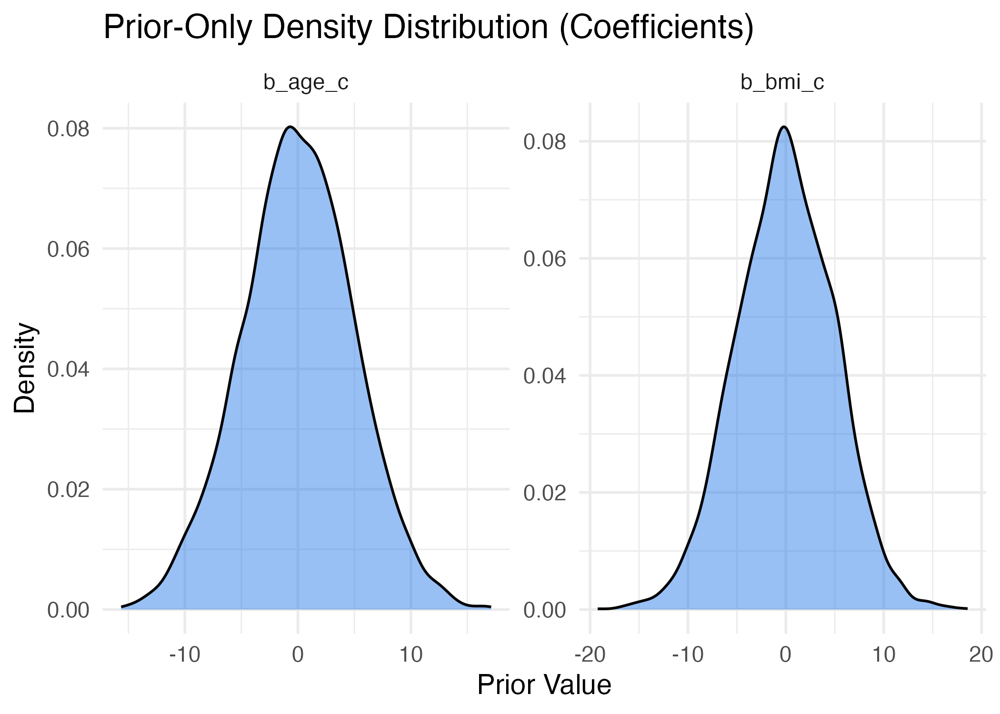
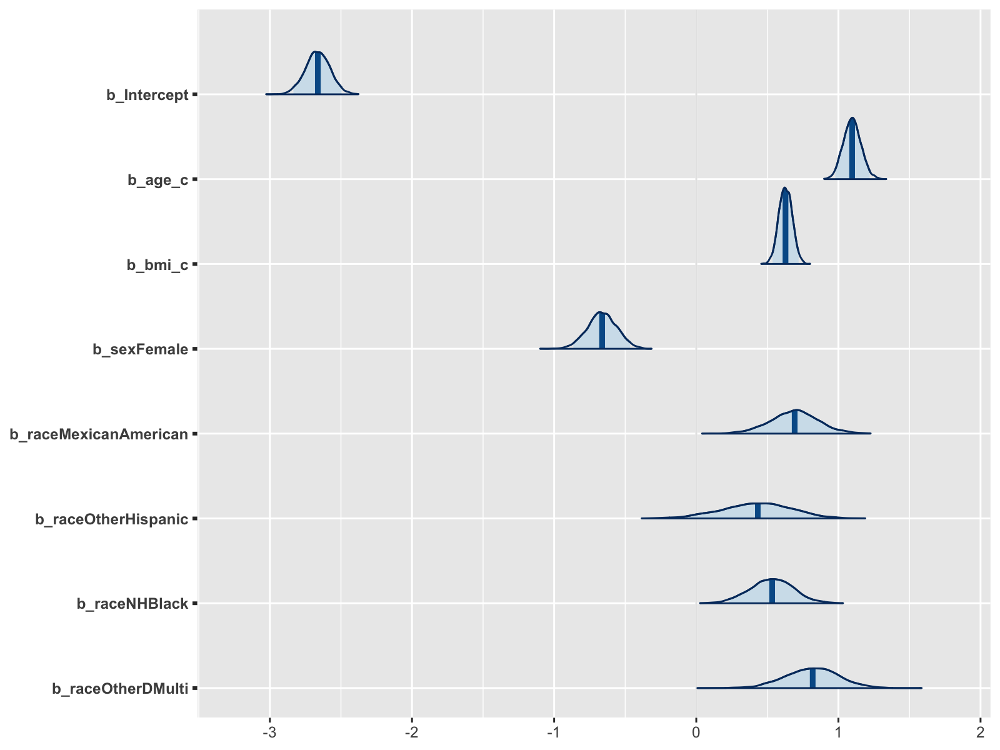
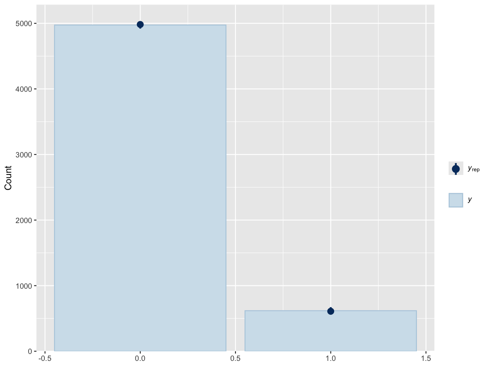

Bayesian Logistic Regression for Predicting Diabetes Risk
NHANES 2013–2014 Analysis
Namita Mishra & Autumn Wilcox
December 13, 2025
Missingness
~7% overall missingness.
92.7% of rows complete.
Minimal structural missingness.
BMI: ~4.3% missing
diabetes_dx: ~3.1% missing
- Missing At Random (MAR): Missingness depends on other observed variables (e.g., exam attendance), not on the missing value itself.

Implementing Design-Based Logistic Regression
Complete-case sample: n = 5,348.
Survey-weighted logistic regression performed using quasibinomial.
Age (per SD ↑): ~3× higher odds of diabetes
BMI (per SD ↑): ~1.9× higher odds
Female: lower odds vs. Male
Certain racial/ethnic groups show higher odds vs NH White

Model Diagnostics
Good convergence shows:
No drift across iterations
Well-mixed chains without any trends and with stable posterior estimates
R-hat ≈ 1
Effective sample size: ~3500 — the MCMC chain has the same information as 3,500 independent samples
- Indicates good mixing, low autocorrelation, and highly reliable posterior estimates



Posterior Predictive Distribution
Posterior draws = 4000 draws (4 chains × 1000 iterations) via MCMC, giving a posterior distribution of predictors.
Conditional distribution
Full probability distribution of the parameter given the data
- Mean and credible intervals are summaries of that distribution, not the distribution itself
Influenced by the prior (prior subjectivity)
Sample size effect: prior influence decreases as sample size increases
 * Y-axis: density (frequency of predicted probabilities)
* Y-axis: density (frequency of predicted probabilities)
X-axis: predicted probability of diabetes (0–1)
Most individuals have low predicted probabilities (near 0), with a smaller peak near 1.
The model closely reproduces the observed data and captures the distribution of diabetes outcomes accurately.
Regression Results (Posterior Estimates and Distribution)


Posterior Coefficients
- Age (per 1 SD): strong positive effect (≈ +1.1, 80% CrI ≈ 0.9–1.3)
- BMI (per 1 SD): positive association (≈ +0.6, 80% CrI ≈ 0.45–0.75)
- Female: slightly protective (≈ –0.2, CrI spans slightly below zero)
- Mexican American: small positive effect (≈ +0.25, wide CrI)
- Other Hispanic: moderate positive effect (≈ +0.35, wide CrI)
- Non-Hispanic Black: clear positive effect (≈ +0.75, CrI ≈ 0.6–0.9)
- Other/Multi: small positive effect (≈ +0.3, wide CrI)
Compare Prior and Posterior Predictive Distribution (Age and BMI)

Prior and posterior distributions for the coefficient estimates of Age (per 1 SD) and BMI (per 1 SD):
- Prior distribution: wide spread (high variance), indicating a high degree of initial uncertainty
- Posterior distribution: narrower and taller
- Data significantly updated the initial beliefs
Posterior Predictive Checks
We draw 500 samples of predicted outcomes for each observation and calculate the proportion of outcomes (Diabetes = 1).

Fig: Bar plot comparing counts/frequencies of each category (0 vs 1) in the observed data (y) and predictive samples (y-rep).
Bars for observed data fall within the range of simulated data: the model predicts the overall diabetes prevalence well.

Histogram shows the posterior distribution of the population proportion of diabetes. x-axis: proportion of diabetics (1s) y-axis: frequency of posterior draws
- Highest bar ≈ 0.11 (11%), symmetric, centered at ~0.11
- Spread: 95% credible interval ≈ 9%–13% diabetes prevalence


Bayesian vs Survey-Weighted NHANES (Diabetes Prevalence)

- Model mean diabetes prevalence = 10.95% (95% CI: 8.5%–12.8%)
- NHANES diabetes prevalence = 8.9% (SE = 0.0048)
Slightly higher model mean, but the credible interval overlaps with NHANES, indicating reasonable calibration.
NHANES lies near the lower end of the posterior distribution but still within a plausible range — the model is well-calibrated.
Pairwise Correlation

- No strong linear relationships between Age, BMI, and Sex; each independently contributes to predicting diabetes.
- Diagonal histograms are smooth and unimodal, confirming stable convergence and well-behaved posterior samples.
- Mild negative correlation between Age and Sex (Female): as the effect of Age increases, the effect of being female slightly decreases.
Weak correlations indicate both predictors provide distinct information for the diabetes outcome.
Translational Research
- Internal Validation - Individual Participant
- Participant Data
- External Validation — Representative High-Risk Profile
This example evaluates the posterior predictive distribution for a real participant from the dataset (“Participant 1”), who has lower-risk characteristics.
- Median predicted probability: ≈ 0.25
- 95% Credible Interval: ≈ 0.20–0.31
This illustrates how the model estimates personalized risk for an individual with moderate demographic and clinical risk factors.
participant1_data <- adult[1, ]
phat1 <- posterior_linpred(bayes_fit, newdata = participant1_data, transform = TRUE)
post_pred_df <- data.frame(pred = phat1)
ci_95_participant1 <- quantile(phat1, c(0.025, 0.975))
ggplot(post_pred_df, aes(x = pred)) +
geom_density(color='darkblue', fill='lightblue') +
geom_vline(xintercept = ci_95_participant1[1], color='red', linetype='dashed') +
geom_vline(xintercept = ci_95_participant1[2], color='red', linetype='dashed') +
xlab('Probability of being diabetic (Outcome = 1)') +
ggtitle('Posterior Predictive Distribution 95% Credible Interval') +
theme_bw()new_participant <- data.frame(
age_c = 40,
bmi_c = 25,
sex = "Female",
race = "Mexican American"
)In contrast to Participant 1, this example evaluates a hypothetical individual with a high-risk profile:
- age_c = 40
- bmi_c = 25
- sex = “Female”
- race = “Mexican American”
The posterior predictive distribution for this profile shows extremely high predicted probability of diabetes (with most posterior draws near 1.0).
This demonstrates how the same Bayesian model yields very different risk predictions for individuals with different demographic and clinical characteristics, and highlights the importance of individualized risk assessment.

X-axis: predicted probability of diabetes (Outcome = 1) Y-axis: density of predicted probabilities Blue curve: posterior predictive distribution Shaded area: high probability values near 1 indicate increased diabetes risk Red dashed line: upper bound of the 95% credible interval
Peak predicted probability: ≈ 1